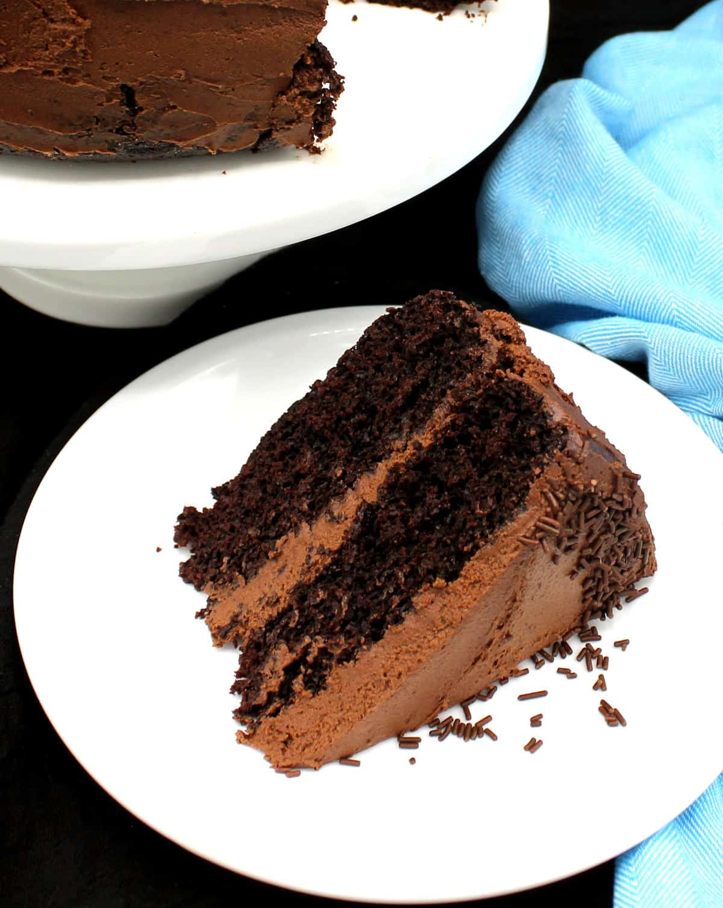

Back to Odin Recipes Homepage
I bet there's still room for Dessert!

Description
This vegan chocolate cake recipe is so dreamy and creamy that you might not want to share! Who am I to blame you?
On the cake goes a creamy dairy free buttercream chocolate frosting crammed with gooey melted chocolate and cocoa.
Chocolate Cake's Ingredients
- All purposes flour, 3 cups. The unbleached one works the best
- Cocoa Powder, ⅔rd of a cup
- Exsqueeze me, a Baking Powder? 1 ½ teaspoons
- Baking Soda, 1 ½ tablespoons
- Salt, 1 ½ teaspoons
- Sugar, 2 ¼ cups. Maple syrup is fine in this cake if you want to stay away from artificial sugars
- Instant Coffee Granules, 1 tablespoon, optional
- 16 tablespoon or 1 cup vegan butter, or oil can be used instead. Use any unflavored vegetable oil but not coconut oil because the flavour would not work well here
- Vegan Yogurt, ½ cup, optional. You can use non-dairy milk, including soy milk or oat milk. Yogurt, however, adds a lovely tenderness to cake so use it if you can
- 1 ¾th cups water
- Apple Cider Vinegar, 2 teaspoons
- Pure Vanilla extract, 2 teaspoons
Chocolate Buttercream Frosting's Ingredients
- 1 Cup Vegan Butter, 16 tablespoons or 2 sticks
- Powdered or Confectioners' Sugar, 2 cups or maple syrup
- Pure Vanilla extract, ½ cup
- Cocoa Powder, ⅔rd of a cup
- Semisweet Chocholat Chips, 1 cup. Optional but recommended
Steps - How to make it
- Preheat the ovenat 190° C / 375° F. Prepare two eight or nine-inch cake tins by lining the bottoms with parchment paper and then greasing and flouring them.
It helps to add a touch of cooking spray before you place the parchment paper into the tin to help it adhere.
- Sift the flour, baking powder, baking soda, salt and cocoa powder into a large bowl or the bowl of a stand mixer. Whisk to mix.
- Dump in the remaining cake ingredients, vegan yogurt, water, vinegar, vegetable oil, sugar, pure vanilla extract and cofee, if using.
- Whisk for a few seconds, scrape the sides and bottom of the bowl with a spatula, and continue mixing for just a few more seconds until you have a smooth batter. Don't overmi
- Divide the batter equally between the two cake pans, place in the preheated oven and bake 25-30 minutes or until a toothpick in the center comes out clean.
- Let the cakes cool in the pans for around 30 minutes, then slide a knife along the sides to loosen, invert each cake into a plate, turn right side up, and continue cooling on the rack.
These cakes are fairly sturdy but always be careful when handling baked cakes, especially if you are new to this.
Make the Frosting
- Place the chocolate chips in a bowl over a simmering pot of water. Stir a couple of times with a spatula until they are completely melted and creamy.
- Place the softened butter in a bowl with the cacao powder and vanilla. Beat with a hand mixer or in a stand mixer until mixed and creamy, then begin whisking in the sugar, half a cup at a time.
I like mixing it slightly with the spatula before I start the hand mixer to ensure it doesn't fly all over the place when I start the hand mixer.
- Stir in the melted chocolate and beat until mixed, if using maple syrup instead of sugar, and if the frosting splits, refrigerate it for 30 minutes before beating in the melted chocolate.
- Frost the cake
Original recipe by Vaishali can be found at Holy Cow Vegan